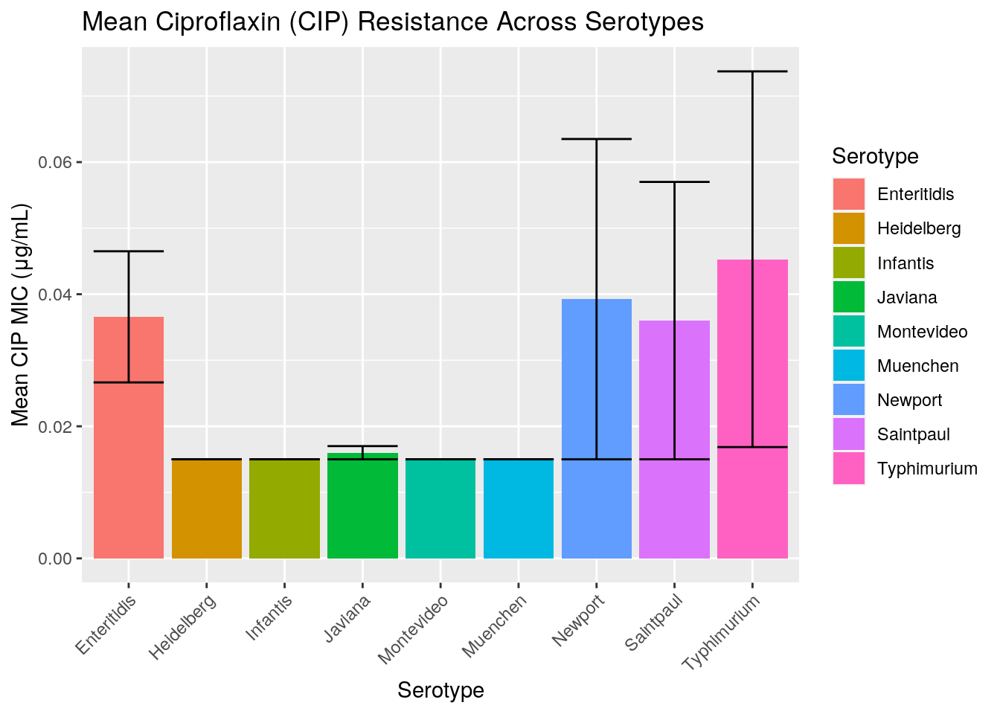
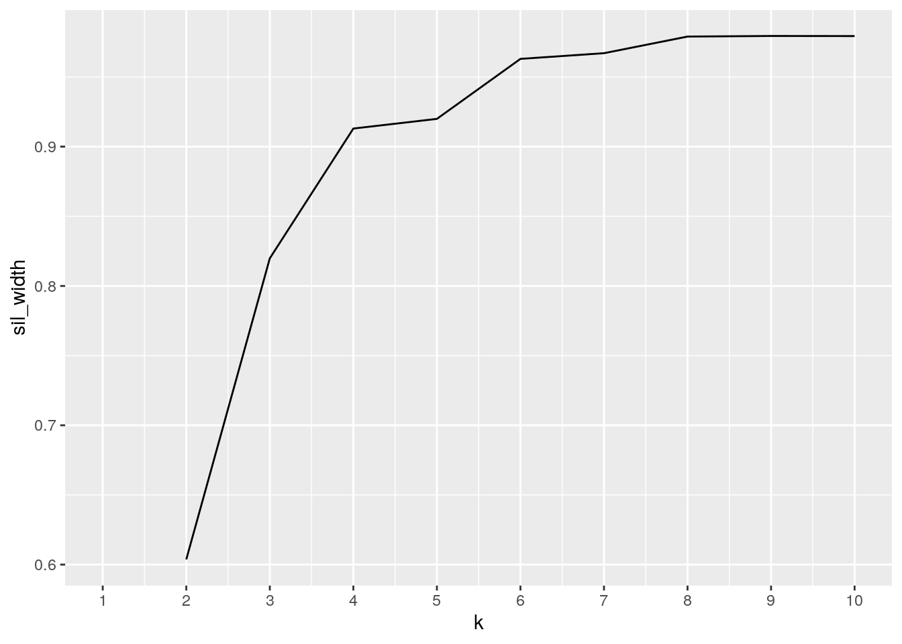

January 1, 0001
Dylan Pfannenstiel, dmp2636
Intro and Importing
I selected data on reported antibiotic resistance in clinical Salmonella isolates. This data were collected in the year 2015. There are 3 separate datasets each with data on a different antibiotic. All include year, genus, specimen ID, genus, species, and serotype (serotype is a way to distinguish within the same species based on surface antigens). The first dataset gives data for ciproflaxin (CIP) resistance. The second dataset gives data for azithromycin (AZM) resistance. The third dataset gives data for ceftriaxone (AXO) resistance.These are three commonly prescribed antibiotics used in the treatment of very severe infections. It may be that as resitance to one antibiotic increases, there is increased resistance to another (even of a different class). If observed, this could be a result of altered expression of non-specific resistance mechanisms such as efflux pumps.
library(tidyverse)
library(cluster)
library(RColorBrewer)All datasets were downloaded from https://wwwn.cdc.gov/narmsnow/ as .csv files.
# read in the datasets
s_cipR <- read.csv("s_cipR.csv")
s_azmR <- read.csv("s_azmR.csv")
s_axoR <- read.csv("s_axoR.csv")
# examine dimensions and variables
dim(s_cipR)## [1] 1806 7head(s_cipR)## X Specimen.ID Genus Species Serotype Data.Year CIP.Rslt
## 1 1 2015AM-0001 Salmonella enterica Enteritidis 2015 0.015
## 2 2 2015AM-0005 Salmonella enterica Baildon 2015 0.015
## 3 3 2015AM-0006 Salmonella enterica IV 48:z4,z32:- 2015 0.015
## 4 4 2015AM-0007 Salmonella enterica Newport 2015 0.015
## 5 5 2015AM-0014 Salmonella enterica Hartford 2015 0.015
## 6 6 2015AM-0015 Salmonella enterica Typhimurium 2015 0.015dim(s_azmR)## [1] 1806 7head(s_azmR)## X Specimen.ID Genus Species Serotype Data.Year AZM.Rslt
## 1 1 2015AM-0001 Salmonella enterica Enteritidis 2015 2
## 2 2 2015AM-0005 Salmonella enterica Baildon 2015 2
## 3 3 2015AM-0006 Salmonella enterica IV 48:z4,z32:- 2015 4
## 4 4 2015AM-0007 Salmonella enterica Newport 2015 2
## 5 5 2015AM-0014 Salmonella enterica Hartford 2015 4
## 6 6 2015AM-0015 Salmonella enterica Typhimurium 2015 2dim(s_axoR)## [1] 1806 7head(s_axoR)## X Specimen.ID Genus Species Serotype Data.Year AXO.Rslt
## 1 1 2015AM-0001 Salmonella enterica Enteritidis 2015 0.25
## 2 2 2015AM-0005 Salmonella enterica Baildon 2015 0.25
## 3 3 2015AM-0006 Salmonella enterica IV 48:z4,z32:- 2015 0.25
## 4 4 2015AM-0007 Salmonella enterica Newport 2015 0.25
## 5 5 2015AM-0014 Salmonella enterica Hartford 2015 0.25
## 6 6 2015AM-0015 Salmonella enterica Typhimurium 2015 0.25Note: These are data from clinical isolates. The "Rslt" variable provides the minimal inhibitory concentration for each antibiotic in μg/mL. This test result provides a measure of antibiotic resistance, with higher values indicating greater resistance.
Joining and Merging
I joined on the common variables listed below, as they were found in each dataset
# join the first 2
cip_azm <- left_join(s_cipR, s_azmR, by = c("Specimen.ID", "Genus",
"Species", "Serotype", "Data.Year"))
# join that to the last one
s_res <- left_join(cip_azm, s_axoR, c("Specimen.ID", "Genus",
"Species", "Serotype", "Data.Year"))
head(s_res)## X.x Specimen.ID Genus Species Serotype Data.Year CIP.Rslt X.y
## 1 1 2015AM-0001 Salmonella enterica Enteritidis 2015 0.015 1
## 2 2 2015AM-0005 Salmonella enterica Baildon 2015 0.015 2
## 3 3 2015AM-0006 Salmonella enterica IV 48:z4,z32:- 2015 0.015 3
## 4 4 2015AM-0007 Salmonella enterica Newport 2015 0.015 4
## 5 5 2015AM-0014 Salmonella enterica Hartford 2015 0.015 5
## 6 6 2015AM-0015 Salmonella enterica Typhimurium 2015 0.015 6
## AZM.Rslt X AXO.Rslt
## 1 2 1 0.25
## 2 2 2 0.25
## 3 4 3 0.25
## 4 2 4 0.25
## 5 4 5 0.25
## 6 2 6 0.25dim(s_res)## [1] 1806 11After performing a two left joins to combine all 3 datasets, we were left with 1806 individual observations. Each original dataset (s_cipR, s_azmR, s_axoR) all contained 1806 observations as well. No observations were dropped. We selected a left join since we wanted to retain all rows and columns in the left dataframe (s_cipR in the first join and the combined s_cipR+s_azmR in the second join). With each left join we wanted to simply add in the resistance values (e.g. AZM.Rslt) in cases in which there was a match to the left/existing data.
Wrangling/Summary
Select
We need to first drop the unecessary "X" identifier variables from the joined dataset
s_res <- s_res %>% select(-X.x, -X.y, -X)
head(s_res)## Specimen.ID Genus Species Serotype Data.Year CIP.Rslt AZM.Rslt
## 1 2015AM-0001 Salmonella enterica Enteritidis 2015 0.015 2
## 2 2015AM-0005 Salmonella enterica Baildon 2015 0.015 2
## 3 2015AM-0006 Salmonella enterica IV 48:z4,z32:- 2015 0.015 4
## 4 2015AM-0007 Salmonella enterica Newport 2015 0.015 2
## 5 2015AM-0014 Salmonella enterica Hartford 2015 0.015 4
## 6 2015AM-0015 Salmonella enterica Typhimurium 2015 0.015 2
## AXO.Rslt
## 1 0.25
## 2 0.25
## 3 0.25
## 4 0.25
## 5 0.25
## 6 0.25mutate + case_when
I want to add columns that classify the susceptibility of the Salmonella isolate based on the MIC values. (chart given here https://www.fda.gov/media/92766/download)
# use case_when to create a conditional mutation that gives
# us susceptibility classification
s_res <- s_res %>% mutate(CIP.Susc = case_when(CIP.Rslt <= 0.06 ~
"S", CIP.Rslt >= 0.12 & CIP.Rslt <= 0.5 ~ "I", CIP.Rslt >=
1 ~ "R")) %>% mutate(AZM.Susc = case_when(AZM.Rslt <= 16 ~
"S", AZM.Rslt >= 32 ~ "R")) %>% mutate(AXO.Susc = case_when(AXO.Rslt <=
1 ~ "S", AXO.Rslt == 2 ~ "I", AXO.Rslt >= 4 ~ "R"))
head(s_res)## Specimen.ID Genus Species Serotype Data.Year CIP.Rslt AZM.Rslt
## 1 2015AM-0001 Salmonella enterica Enteritidis 2015 0.015 2
## 2 2015AM-0005 Salmonella enterica Baildon 2015 0.015 2
## 3 2015AM-0006 Salmonella enterica IV 48:z4,z32:- 2015 0.015 4
## 4 2015AM-0007 Salmonella enterica Newport 2015 0.015 2
## 5 2015AM-0014 Salmonella enterica Hartford 2015 0.015 4
## 6 2015AM-0015 Salmonella enterica Typhimurium 2015 0.015 2
## AXO.Rslt CIP.Susc AZM.Susc AXO.Susc
## 1 0.25 S S S
## 2 0.25 S S S
## 3 0.25 S S S
## 4 0.25 S S S
## 5 0.25 S S S
## 6 0.25 S S SNote: S is susceptible, I is intermediate, and R is resistant.
Summary stats
# calculate mean MIC values for each antibiotic
s_res %>% summarize(meanMICcip = mean(CIP.Rslt), meanMICazm = mean(AZM.Rslt),
meanMICaxo = mean(AXO.Rslt))## meanMICcip meanMICazm meanMICaxo
## 1 0.0355371 3.653516 0.857835# number of distinct MIC values reported for each antibiotic
s_res %>% summarize(disMICcip = n_distinct(CIP.Rslt), distMICazm = n_distinct(AZM.Rslt),
distMICaxo = n_distinct(AXO.Rslt))## disMICcip distMICazm distMICaxo
## 1 9 5 9# standard deviation for MIC values for each antibiotic
s_res %>% summarize(sdMICcip = sd(CIP.Rslt), sdMICazm = sd(AZM.Rslt),
sdMICaxo = sd(AXO.Rslt))## sdMICcip sdMICazm sdMICaxo
## 1 0.1580069 1.505162 4.190648# now do the same, but when grouped by species and serotype
s_res %>% group_by(Species, Serotype) %>% summarize(meanMICcip = mean(CIP.Rslt),
meanMICazm = mean(AZM.Rslt), meanMICaxo = mean(AXO.Rslt))## # A tibble: 108 x 5
## # Groups: Species [1]
## Species Serotype meanMICcip meanMICazm meanMICaxo
## <fct> <fct> <dbl> <dbl> <dbl>
## 1 enterica Adelaide 0.112 3.6 0.25
## 2 enterica Agbeni 0.015 3.33 0.25
## 3 enterica Agona 0.0591 4.36 1.68
## 4 enterica Albany 0.015 4 0.25
## 5 enterica Albert 0.5 8 0.25
## 6 enterica Altona 0.015 4 0.25
## 7 enterica Anatum 0.128 3.56 6.37
## 8 enterica Arechavaleta 0.015 3 0.25
## 9 enterica Baildon 0.0500 2.67 0.25
## 10 enterica Bareilly 0.0444 4.47 0.25
## # … with 98 more rows# minimum when grouped
s_res %>% group_by(Species, Serotype) %>% summarize(minMICcip = min(CIP.Rslt),
minMICazm = min(AZM.Rslt), minMICaxo = min(AXO.Rslt))## # A tibble: 108 x 5
## # Groups: Species [1]
## Species Serotype minMICcip minMICazm minMICaxo
## <fct> <fct> <dbl> <dbl> <dbl>
## 1 enterica Adelaide 0.015 2 0.25
## 2 enterica Agbeni 0.015 2 0.25
## 3 enterica Agona 0.015 4 0.25
## 4 enterica Albany 0.015 4 0.25
## 5 enterica Albert 0.5 8 0.25
## 6 enterica Altona 0.015 4 0.25
## 7 enterica Anatum 0.015 0.25 0.25
## 8 enterica Arechavaleta 0.015 2 0.25
## 9 enterica Baildon 0.015 2 0.25
## 10 enterica Bareilly 0.015 2 0.25
## # … with 98 more rowsThe tables above describe the mean MIC values for each antibiotic, the number of distinct MIC values for each antibiotic, and the standard deviation of MIC values for each. It also provides the mean MIC and minimum MIC for all 3 antibiotics when grouped by species and serotype.
Now say we've read a lot of literature on Salmonella serotype Enteritidis. This is a pathogen of interest. We can pull out that row to examine its mean MICs via filter
s_res %>% group_by(Species, Serotype) %>% summarize(meanMICcip = mean(CIP.Rslt),
meanMICazm = mean(AZM.Rslt), meanMICaxo = mean(AXO.Rslt)) %>%
filter(Serotype == "Enteritidis")## # A tibble: 1 x 5
## # Groups: Species [1]
## Species Serotype meanMICcip meanMICazm meanMICaxo
## <fct> <fct> <dbl> <dbl> <dbl>
## 1 enterica Enteritidis 0.0385 3.46 0.273Now let's pivot the original summary table to get a different look
Tidying/Pivoting
pivoting wide
# reshape table to wide (very wide) format. Every
# Serotype/MIC has its own column
wides_res <- s_res %>% group_by(Species, Serotype) %>% summarize(meanMICcip = mean(CIP.Rslt),
meanMICazm = mean(AZM.Rslt), meanMICaxo = mean(AXO.Rslt)) %>%
pivot_wider(names_from = "Serotype", values_from = c("meanMICcip",
"meanMICazm", "meanMICaxo"))
head(wides_res)## # A tibble: 1 x 325
## # Groups: Species [1]
## Species meanMICcip_Adel… meanMICcip_Agbe… meanMICcip_Agona meanMICcip_Alba…
## <fct> <dbl> <dbl> <dbl> <dbl>
## 1 enteri… 0.112 0.015 0.0591 0.015
## # … with 320 more variables: meanMICcip_Albert <dbl>, meanMICcip_Altona <dbl>,
## # meanMICcip_Anatum <dbl>, meanMICcip_Arechavaleta <dbl>,
## # meanMICcip_Baildon <dbl>, meanMICcip_Bareilly <dbl>,
## # meanMICcip_Berta <dbl>, meanMICcip_Blockley <dbl>,
## # meanMICcip_Bovismorbificans <dbl>, meanMICcip_Braenderup <dbl>,
## # meanMICcip_Brandenburg <dbl>, meanMICcip_Brive <dbl>,
## # meanMICcip_Bullbay <dbl>, meanMICcip_Cerro <dbl>, meanMICcip_Chailey <dbl>,
## # meanMICcip_Chester <dbl>, meanMICcip_Clackamas <dbl>,
## # meanMICcip_Cotham <dbl>, meanMICcip_Derby <dbl>, meanMICcip_Dublin <dbl>,
## # meanMICcip_Durban <dbl>, meanMICcip_Eastbourne <dbl>, meanMICcip_Eko <dbl>,
## # meanMICcip_Enteritidis <dbl>, meanMICcip_Gaminara <dbl>,
## # meanMICcip_Give <dbl>, meanMICcip_Hadar <dbl>, meanMICcip_Hannover <dbl>,
## # meanMICcip_Hartford <dbl>, meanMICcip_Havana <dbl>,
## # meanMICcip_Heidelberg <dbl>, meanMICcip_Hvittingfoss <dbl>, `meanMICcip_I
## # 4,[5],12:b:-` <dbl>, `meanMICcip_I 4,[5],12:b:- var. L(+) tartrate+` <dbl>,
## # `meanMICcip_I 4,[5],12:i:-` <dbl>, `meanMICcip_I 45:b:-` <dbl>,
## # `meanMICcip_I 9,12:-:1,5` <dbl>, `meanMICcip_I 9,12:l,z28:-` <dbl>,
## # `meanMICcip_I Rough:nonmotile` <dbl>, `meanMICcip_I Rough:z:1,6` <dbl>,
## # `meanMICcip_IIIa 48:g,z51:-` <dbl>, `meanMICcip_IIIa 56:z4,z23:-` <dbl>,
## # `meanMICcip_IIIb 11:l,[v],[z13]:z53` <dbl>, meanMICcip_Indiana <dbl>,
## # meanMICcip_Infantis <dbl>, meanMICcip_Inverness <dbl>,
## # meanMICcip_Irumu <dbl>, meanMICcip_Isangi <dbl>, `meanMICcip_IV
## # 40:z4,z32:-` <dbl>, `meanMICcip_IV 44:z4,z23:-` <dbl>, `meanMICcip_IV
## # 44:z4,z24:-` <dbl>, `meanMICcip_IV 48:z4,z32:-` <dbl>, `meanMICcip_IV
## # 50:z4,z23:-` <dbl>, `meanMICcip_IV 6,7:z4,z23:-` <dbl>,
## # meanMICcip_Javiana <dbl>, meanMICcip_Kentucky <dbl>,
## # meanMICcip_Kiambu <dbl>, meanMICcip_Krefeld <dbl>,
## # meanMICcip_Litchfield <dbl>, meanMICcip_London <dbl>,
## # meanMICcip_Manhattan <dbl>, meanMICcip_Mbandaka <dbl>,
## # meanMICcip_Miami <dbl>, meanMICcip_Minnesota <dbl>,
## # meanMICcip_Mississippi <dbl>, meanMICcip_Monschaui <dbl>,
## # meanMICcip_Montevideo <dbl>, meanMICcip_Muenchen <dbl>,
## # meanMICcip_Muenster <dbl>, meanMICcip_Napoli <dbl>,
## # meanMICcip_Newport <dbl>, meanMICcip_Norwich <dbl>,
## # meanMICcip_Oranienburg <dbl>, meanMICcip_Oslo <dbl>,
## # meanMICcip_Panama <dbl>, `meanMICcip_Paratyphi B var. L(+)
## # tartrate+` <dbl>, meanMICcip_Pensacola <dbl>, meanMICcip_Plymouth <dbl>,
## # meanMICcip_Pomona <dbl>, meanMICcip_Poona <dbl>, meanMICcip_Reading <dbl>,
## # meanMICcip_Rissen <dbl>, meanMICcip_Roodepoort <dbl>,
## # meanMICcip_Rubislaw <dbl>, meanMICcip_Saintpaul <dbl>,
## # meanMICcip_Sandiego <dbl>, meanMICcip_Schwarzengrund <dbl>,
## # meanMICcip_Senftenberg <dbl>, meanMICcip_Singapore <dbl>,
## # meanMICcip_Stanley <dbl>, meanMICcip_Stanleyville <dbl>,
## # `meanMICcip_Subspecies I, Group D1` <dbl>, meanMICcip_Tallahassee <dbl>,
## # meanMICcip_Telelkebir <dbl>, meanMICcip_Tennessee <dbl>,
## # meanMICcip_Thompson <dbl>, meanMICcip_Toucra <dbl>,
## # meanMICcip_Typhimurium <dbl>, `meanMICcip_Typhimurium var. 5-` <dbl>,
## # meanMICcip_Uganda <dbl>, …325 columns is ridiculous so let's return to our original table
pivoting again + arrange() + group_by()
# There are too many columns to be useful, so let's reshape this table again
wides_res %>% pivot_longer(2:325) %>%
separate(name,into=c("Rslt","Serotype")) %>%
group_by(Serotype) %>% # now we need to recreate new columns with the MIC names
mutate(row = row_number()) %>% # without this unique identifier, the values are lost somehow
pivot_wider(names_from="Rslt",values_from="value") %>%
select(-row) %>% arrange(Serotype) %>%
# but now each antibiotic is separated between rows
# We need to collapse these rows into 1 row while keeping the same columns
group_by(Species,Serotype) %>% summarize(meanMICcip=sum(meanMICcip,na.rm=T),
meanMICazm=sum(meanMICazm,na.rm=T),
meanMICaxo=sum(meanMICaxo,na.rm=T))## # A tibble: 94 x 5
## # Groups: Species [1]
## Species Serotype meanMICcip meanMICazm meanMICaxo
## <fct> <chr> <dbl> <dbl> <dbl>
## 1 enterica Adelaide 0.112 3.6 0.25
## 2 enterica Agbeni 0.015 3.33 0.25
## 3 enterica Agona 0.0591 4.36 1.68
## 4 enterica Albany 0.015 4 0.25
## 5 enterica Albert 0.5 8 0.25
## 6 enterica Altona 0.015 4 0.25
## 7 enterica Anatum 0.128 3.56 6.37
## 8 enterica Arechavaleta 0.015 3 0.25
## 9 enterica Baildon 0.0500 2.67 0.25
## 10 enterica Bareilly 0.0444 4.47 0.25
## # … with 84 more rows# now we've restored the original long dataframeCorrelation between the MIC variables, cor()
abcor <- s_res %>% select(-Data.Year) %>% select_if(is.numeric) %>%
cor(use = "pair")
abcor## CIP.Rslt AZM.Rslt AXO.Rslt
## CIP.Rslt 1.00000000 0.2213665 0.06468706
## AZM.Rslt 0.22136653 1.0000000 0.07534790
## AXO.Rslt 0.06468706 0.0753479 1.00000000There is a weak positive correlation between AZM resistance and CIP resistance. There is a very weak positive correlation between AXO resistance and CIP resistance (near zero). There is also a very weak positive correlation between AZM and AXO resistance (near zero). The lack of strong correlation in resistance is likley due to the fact that each of these antibiotics acts through a different mechanism. As a result, resistance that occurs is liklely to only provide defense against that certain class of antibiotics. More data would be needed to identify a possible general resistance mechanism as mentioned before.
Creating correlation heatmap
tidying
# tidy the data into a nice dataframe for future use
tidyabcor <- abcor %>% as.data.frame %>% rownames_to_column("var1") %>%
pivot_longer(-1, names_to = "var2", values_to = "correlation")
tidyabcor## # A tibble: 9 x 3
## var1 var2 correlation
## <chr> <chr> <dbl>
## 1 CIP.Rslt CIP.Rslt 1
## 2 CIP.Rslt AZM.Rslt 0.221
## 3 CIP.Rslt AXO.Rslt 0.0647
## 4 AZM.Rslt CIP.Rslt 0.221
## 5 AZM.Rslt AZM.Rslt 1
## 6 AZM.Rslt AXO.Rslt 0.0753
## 7 AXO.Rslt CIP.Rslt 0.0647
## 8 AXO.Rslt AZM.Rslt 0.0753
## 9 AXO.Rslt AXO.Rslt 1Visualizing
cor heatmap
tidyabcor %>% ggplot(aes(var1, var2, fill = correlation)) + geom_tile() +
scale_fill_gradient2(low = "red", mid = "white", high = "blue") +
geom_text(aes(label = round(correlation, 2)), color = "black",
size = 4) + theme(axis.text.x = element_text(angle = 90,
hjust = 1)) + coord_fixed()##### See earlier correlation interpretation
# there are too many serotypes to make readable plots. So
# let's just look at the 10 serotypes that occur most
# frequently
s_res %>% group_by(Serotype) %>% summarize(n = n()) %>% ungroup() %>%
arrange(desc(n)) %>% slice(1:10)## # A tibble: 10 x 2
## Serotype n
## <fct> <int>
## 1 Enteritidis 378
## 2 Typhimurium 185
## 3 Newport 168
## 4 I 4,[5],12:i:- 117
## 5 Javiana 98
## 6 Muenchen 64
## 7 Heidelberg 49
## 8 Saintpaul 49
## 9 Montevideo 48
## 10 Infantis 47# now that we know them, create a new dataset with only these
# serotypes (for use in plotting)
top10 <- s_res %>% filter(Serotype == c("Enteritidis", "Typhimurium",
"Newport", "I4,[5],12:i:-", "Javiana", "Muenchen", "Heidelberg",
"Saintpaul", "Montevideo", "Infantis"))
head(top10)## Specimen.ID Genus Species Serotype Data.Year CIP.Rslt AZM.Rslt
## 1 2015AM-0001 Salmonella enterica Enteritidis 2015 0.015 2
## 2 2015AM-0105 Salmonella enterica Enteritidis 2015 0.015 2
## 3 2015AM-0119 Salmonella enterica Enteritidis 2015 0.015 4
## 4 2015AM-0141 Salmonella enterica Typhimurium 2015 0.030 4
## 5 2015AM-0234 Salmonella enterica Typhimurium 2015 0.015 4
## 6 2015AM-0252 Salmonella enterica Newport 2015 0.015 2
## AXO.Rslt CIP.Susc AZM.Susc AXO.Susc
## 1 0.25 S S S
## 2 0.25 S S S
## 3 0.25 S S S
## 4 0.25 S S S
## 5 0.25 S S S
## 6 0.25 S S SLook AXO resistance across the serotypes. Each isolate gets its own point
ggplot(data = top10, aes(x = Serotype, y = AXO.Rslt, color = AXO.Susc)) +
geom_point(alpha = 0.5, position = position_jitter(h = 0.15,
w = 0.15)) + theme(axis.text.x = element_text(angle = 45,
hjust = 1)) + ggtitle("Ceftriaxone (AXO) Resistance Across Serotypes") +
ylab("AXO MIC (μg/mL)") + xlab("Serotype") + labs(color = "AXO Susceptiblity") +
scale_y_continuous(breaks = seq(0, 9, 1)) + scale_color_brewer(palette = "Dark2")Since there were many isolates with the same or similar MICs, I used jittering to try to show more of the observations. The scatterplot maps resistance (measured by MIC) across the 10 most frequently occuring isolates. The majority of clinical isolates had relatively low ceftriaxone MICs and were classified as susceptible (good news!). However, there were resistant isolates of serotypes Infantis and Typhimurium. The majority of observed MICs fell around .25 μg/mL. For this antibiotic, the proportion of bacterial isolates that are resistant is very low, suggesting that resistance is not yet wide spread.
ggplot(data = top10, aes(x = Serotype)) + geom_bar(aes(y = CIP.Rslt,
fill = Serotype), stat = "summary", fun = mean) + geom_errorbar(aes(y = CIP.Rslt),
stat = "summary", fun.data = mean_se) + theme(axis.text.x = element_text(angle = 45,
hjust = 1)) + ggtitle("Mean Ciproflaxin (CIP) Resistance Across Serotypes") +
ylab("Mean CIP MIC (μg/mL)") + xlab("Serotype")
This was a boxplot describing the mean ciproflaxin MIC across the 10 serotypes. Across all serotypes, typhimurium exhibited the highest mean resistance to ciproflaxin. However, the differences were not statistically significant due to high standard error. While some serotypes may show somehwat greater resistance than others, these differences are not large enough to suggest any substantial trends.
While it would have been nice to visualize the data for all serotypes in the original dataset, there were simply too many to create a readable plot.
Dimensionality Reduction - PAM
Choosing number of clusters with silhoutte width
Now we're returning to using the full dataset with all serotypes included
pam_dat <- s_res %>% select(6:8) # only our numeric resistance variables of interest, creating PAM datset
sil_width <- vector() # hold mean sil width
for (i in 2:10) {
pam_fit <- pam(pam_dat, k = i) # solution
sil_width[i] <- pam_fit$silinfo$avg.width
}
ggplot() + geom_line(aes(x = 1:10, y = sil_width)) + scale_x_continuous(name = "k",
breaks = 1:10)
k=8 appears most suitable. At k=8 average silouhette width is greatest (approaching 1), providing evidence of a strong structure
Did not scale data since all MIC values were already on same scale
pam <- pam_dat %>% pam(k = 8)
pam## Medoids:
## ID CIP.Rslt AZM.Rslt AXO.Rslt
## [1,] 1806 0.015 2 0.25
## [2,] 1805 0.015 4 0.25
## [3,] 1489 0.250 16 0.25
## [4,] 1587 0.015 4 32.00
## [5,] 1804 0.015 8 0.25
## [6,] 1797 0.015 4 8.00
## [7,] 1782 0.015 4 16.00
## [8,] 1572 0.015 4 64.00
## Clustering vector:
## [1] 1 1 2 1 2 1 2 2 1 2 2 1 1 2 2 2 1 1 1 2 1 1 1 1 1 1 2 1 2 2 2 1 1 2 1 1 2
## [38] 3 4 2 1 1 1 1 1 1 2 1 2 4 2 5 2 2 1 2 2 6 7 2 2 2 2 7 2 2 5 2 2 2 1 4 1 1
## [75] 2 1 2 1 2 5 2 2 2 2 1 2 2 2 2 7 2 7 1 5 4 2 2 2 2 1
## [ reached getOption("max.print") -- omitted 1706 entries ]
## Objective function:
## build swap
## 0.04235511 0.04235511
##
## Available components:
## [1] "medoids" "id.med" "clustering" "objective" "isolation"
## [6] "clusinfo" "silinfo" "diss" "call" "data"Ran pam function on new pam dataset
plotting
pamclust <- pam_dat %>% mutate(cluster = as.factor(pam$clustering)) # save cluster assignments
pamclust %>% ggplot(aes(CIP.Rslt, AZM.Rslt, color = cluster)) +
geom_point()Plotted cluster assignments with AZM resistance vs. CIP resistance
There appear to be few observations because many of the isolates have similar or the same MIC values. The points are superimposed/overlapped
pamclust <- pam_dat %>% mutate(cluster = as.factor(pam$clustering))
pamclust %>% ggplot(aes(CIP.Rslt, AXO.Rslt, color = cluster)) +
geom_point()
Plotted cluster assignments with AXO resistance vs. CIP resistance
pamclust <- pam_dat %>% mutate(cluster = as.factor(pam$clustering))
pamclust %>% ggplot(aes(AZM.Rslt, AXO.Rslt, color = cluster)) +
geom_point()Plotted cluster assignments with AXO resistance vs. AZM resistance
Summarize the clusters
pamclust %>% group_by(cluster) %>% summarize_if(is.numeric, mean,
na.rm = T)## # A tibble: 8 x 4
## cluster CIP.Rslt AZM.Rslt AXO.Rslt
## <fct> <dbl> <dbl> <dbl>
## 1 1 0.0305 2.00 0.251
## 2 2 0.0288 4 0.257
## 3 3 0.738 16 0.25
## 4 4 0.0756 3.75 32
## 5 5 0.0530 8 0.25
## 6 6 0.123 4 8
## 7 7 0.0279 4.07 16
## 8 8 0.265 6 64Want to see what our clusters look like in terms of original variables
Looking at final medoids
s_res %>% slice(pam$id.med)## Specimen.ID Genus Species Serotype Data.Year CIP.Rslt
## 1 2015K-0616 Salmonella enterica Enteritidis 2015 0.015
## 2 2015AM-3740 Salmonella enterica Saintpaul 2015 0.015
## 3 2015AM-3265 Salmonella enterica Enteritidis 2015 0.250
## 4 2015AM-3428 Salmonella enterica Newport 2015 0.015
## 5 2015AM-3739 Salmonella enterica Schwarzengrund 2015 0.015
## 6 2015AM-3720 Salmonella enterica Typhimurium var. 5- 2015 0.015
## 7 2015AM-3688 Salmonella enterica Newport 2015 0.015
## 8 2015AM-3413 Salmonella enterica Anatum 2015 0.015
## AZM.Rslt AXO.Rslt CIP.Susc AZM.Susc AXO.Susc
## 1 2 0.25 S S S
## 2 4 0.25 S S S
## 3 16 0.25 I S S
## 4 4 32.00 S S R
## 5 8 0.25 S S S
## 6 4 8.00 S S R
## 7 4 16.00 S S R
## 8 4 64.00 S S RThese are the most representative observations
Clustering was performed to reproduce the underlying structure of my dataset without using the original vriables by creating new, artificial groupings/clusters. Our cluster assignment reflected these original variables fairly well with some discrepancies. AS we compared mediods to the means of the original variables, we can see that PAM was able to classify serotypes with surprising accuracy, providing a structure very similar to that prescribed by the original variables.
# find the average silhouette width
pam$silinfo$avg.width## [1] 0.9790097# visualize it
pam$silinfo$widths %>% as.data.frame %>% mutate(x = dim(pam$silinfo$widths)[1]:1) %>%
ggplot(aes(x, y = sil_width, fill = as.factor(cluster))) +
geom_bar(stat = "identity") + xlab("") + facet_grid(cluster ~
., scales = "free_y") + coord_flip() + theme(legend.position = "none")##### The average silhouette width is .979, indicating that a strong stucture has been found.